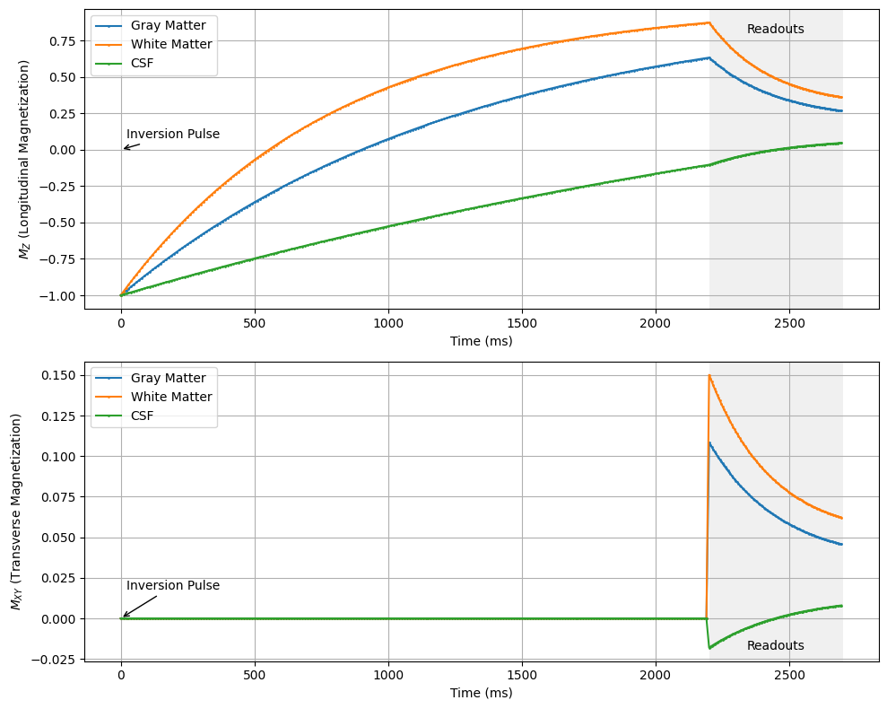

Fast Imaging Pulse Sequences#
Modern MRI scanning relies heavily fast imaging pulse sequences, primarily echo-planar imaging (EPI) and multiple Spin-echo (RARE/FSE/TSE) methods. These allow for multiple k-space lines to be acquired within a single TR.
Learning Goals#
Describe how images are formed
Describe how data is acquired in FSE/TSE sequences
Describe how EPI works
Understand what “spoiling” means
Understand the most popular pulse sequences and their acronyms
Describe how FSE/TSE sequences work
Describe how EPI works
Describe how fast gradient-echo sequences work
Manipulate MRI sequence parameters to improve performance
Understand how and when to accelerate with FSE/TSE
Understand how and when to accelerate with EPI
Understand how contrast changes in fast gradient-echo sequences
Identify artifacts and how to mitigate them
Identify FSE/TSE artifacts include T2 blurring
Identify EPI artifacts including distortion and T2*
Identify fast gradient-echo artifacts such as banding in bSSFP
Multiple Spin-echo Sequences (RARE/FSE/TSE)#
These pulse sequences use multiple spin-echo refocusing pulses after a single exictation pulse to acquire multiple k-space lines to be acquired during the multiple spin-echoes that are formed. This technique was originally called Rapid Acquisition with Relaxation Enhancement (RARE), and is known on various MRI scanners as fast spin-echo (FSE, GE Healthcare), turbo spin-echo (TSE, Siemens Healthineers), or turbo field-echo (TFE, Philips Healthcare).
This is the most common pulse sequence used in clinical practice. This is because it is highly SNR efficient and can also be used to generate multiple contrasts. They are particularly effective for T2 and PD-weighted imaging.
Simplified Pulse Sequence Diagram#
Sequence parameters#
Echo spacing (\(t_{esp}\)) - time between each spin-echo
Echo train length (ETL) - number of spin-echoes with a repetition
Effective TE (\(TE_{eff}\)) - the echo time when the data closest to the center of k-space is acquired.
Tradeoffs#
Pros
Fast
SNR efficient
Supports multiple contrasts by manipulating \(TE_{eff}\)
Cons
Long echo train lengths can lead to T2 blurring or other distortions
High SAR from repeated refocusing pulses
Echo-planar Imaging (EPI)#
These pulse sequences readout multiple k-space lines sequentially for faster imaging. It is commonly used for diffusion-weighted imaging and fMRI.
Pulse Sequence and K-space Diagram#
Sequence parameters#
Echo spacing (\(t_{esp}\)) - time between each readout and gradient-echo
Echo train length (ETL) - number of readouts or k-space lines acquired within a repetition
TE - the time when the data closest to the center of k-space is acquired.
Tradeoffs#
Pros
Extremely Fast, supporting single-shot imaging
Cons
Susceptible to chemical shift and susceptibility displacement artifacts
Sensitive to gradient fidelity artifacts (e.g. Nyquist ghosting)
Long echo train lengths can lead to T2* blurring
Fast gradient-echo sequences#
The basic gradient-echo sequence is typically a spoiled gradient-echo sequence. The sequence is called spoiled because the transverse magnetization is spoiled by a spoiler gradient before the next RF pulse.
Spoiler or Crusher gradients#
A large, unbalanced gradient will create dephasing of the transverse magnetization across the imaging voxels. This effectively eliminates the signal. However, the net magnetization is not truly eliminated, and this can be refocused by gradients.
RF spoiling#
The RF axis of rotation is changed every TR. This reduces the chances of magnetization from previous TRs to become coherently excited. Specific RF spoiling schemes, such as quadratic phase incrementation, is required for this to be effective.
Types of fast gradient-echo sequences#
Spoiled gradient-echo (SPGR)/fast low-angle shot (FLASH)
Aims to full spoil transverse magnetization every TR
Both gradient and RF spoiling are used
Pure T1 weighted contrast
Gradient-recalled acquisition in the steady state (GRASS)/fast imaging with steady-state precession (FISP)
Allows for residual transverse magnetization to be used in the next TR
Refouces frequency and phase encoding gradients
RF spoiling used
Increases T2* contrast
Steady-state free precession (SSFP)/time-reversed fast imaging with steady-state precession (PSIF)
Use gradients to refocus signals from previous TRs
Gradient spoiling but refocused in later TRs
Creates T2/T1 contrast
Balanced SSFP/TrueFISP
Balanced gradients every TR
No spoiling, all magnetization preserved each TR
Creates T2/T1 contrast
High SNR efficiency
Magnetization Prepared Fast Gradient-echo Sequences#
Magnetization preparation schemes, such as inversion recovery, T2-preparation, and magnetization transfer, encode contrast in the longitudinal magnetization. This contrast can be efficiently imaged with multiple gradient-echo readouts after a single magnetization preparation module.
The most common of this type of sequence is the Magnetization Prepared Rapid Gradient Echo (MPRAGE) sequence for brain imaging, which specifically uses inversion recovery magnetization preparation to create T1-weighted contrast, followed by multiple spoiled gradient-echo readouts to retain only T1-weighted contrast.
This sequence includes several additional parameters, including the recovery time, \(T_{recovery}\), and number of readouts per preparation, \(N_{segments}\), as well as the specific paramters of the magnetization preparation.
# Simulate MPRAGE MRI Pulse Sequence, which typically uses inversion preparation
import numpy as np
import matplotlib.pyplot as plt
flip_angle = 10 * np.pi / 180 # Flip angle in radians
TE = 1 # Echo time in ms
TR = 5 # Repetition time in ms
N_segments = 100 # Number of pulses
T_recovery = 2200 # Delay after inversion pulse in ms
MZ_start = 1.0 # Initial longitudinal magnetization
MZ_inversion = -MZ_start # After inversion pulse
t_recovery = np.arange(0, T_recovery, 10) # Time array for recovery period
t_segments = np.arange(0, N_segments * TR, TR) + T_recovery # Time array for pulse sequence
# Define T1/T2 values for different tissue types
tissues = {
'Gray Matter': {'T1': 1300, 'T2': 80},
'White Matter': {'T1': 800, 'T2': 110},
'CSF': {'T1': 3700, 'T2': 1700}
}
fig, (ax1, ax2) = plt.subplots(2, 1, figsize=(10, 8))
for tissue_name, params in tissues.items():
T1, T2 = params['T1'], params['T2']
# Vectorized longitudinal recovery during the inversion recovery period
MZ_recovery = MZ_inversion * np.exp(-t_recovery / T1) + (1 - np.exp(-t_recovery / T1))
MZ_segments = np.zeros(N_segments)
MXY_segments = np.zeros(N_segments)
# Longitudinal magnetization at the start of the segmented readouts
MZ_segments[0] = MZ_inversion * np.exp(-T_recovery / T1) + (1 - np.exp(-T_recovery / T1))
for n in range(1, N_segments):
MZ_segments[n] = MZ_segments[n-1] * np.cos(flip_angle) * np.exp(-TR / T1) + (1 - np.exp(-TR / T1))
for n in range(0, N_segments):
MXY_segments[n] = MZ_segments[n] * np.sin(flip_angle) * np.exp(-TE / T2)
ax1.plot(np.concatenate((t_recovery, t_segments)), np.concatenate((MZ_recovery, MZ_segments)), label=tissue_name, marker='o', markersize=1)
ax2.plot(np.concatenate((t_recovery, t_segments)), np.concatenate((np.zeros_like(MZ_recovery), MXY_segments)), label=tissue_name, marker='o', markersize=1)
ax1.set_xlabel('Time (ms)')
ax1.set_ylabel('$M_Z$ (Longitudinal Magnetization)')
ax1.legend()
ax1.grid(True)
ax2.set_xlabel('Time (ms)')
ax2.set_ylabel('$M_{XY}$ (Transverse Magnetization)')
ax2.legend()
ax2.grid(True)
# Annotations
start_readouts = T_recovery
end_readouts = T_recovery + N_segments * TR
mid_readouts = (start_readouts + end_readouts) / 2
y1_min = ax1.get_ylim()[0]
y2_min = ax2.get_ylim()[0]
y1_max = ax1.get_ylim()[1]
y2_max = ax2.get_ylim()[1]
ax1.annotate('Inversion Pulse', xy=(0, 0), xytext=(20, y1_max * 0.15),
arrowprops=dict(arrowstyle='->'), ha='left', va='top')
ax2.annotate('Inversion Pulse', xy=(0, 0), xytext=(20, y2_max * 0.15),
arrowprops=dict(arrowstyle='->'), ha='left', va='top')
ax1.text(mid_readouts, y1_max * 0.9, 'Readouts', ha='center', va='top')
ax2.text(mid_readouts, y2_min * 0.5, 'Readouts', ha='center', va='top')
ax1.axvspan(start_readouts, end_readouts, color='0.9', alpha=0.6, linewidth=0)
ax2.axvspan(start_readouts, end_readouts, color='0.9', alpha=0.6, linewidth=0)
plt.tight_layout()
plt.show()
